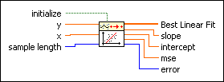

Linear Fit PtByPt VI
Owning Palette: Fitting PtByPt VIs
Requires: Full Development System
Finds the line values and the coefficients slope and intercept, using the least-squares solution, that describe the line that best represents the set of input data points specified by sample length.
This VI is similar to the Linear Fit VI.
 | Note By default, reentrant execution is enabled in all Point By Point VIs. |

 Add to the block diagram Add to the block diagram |
 Find on the palette Find on the palette |